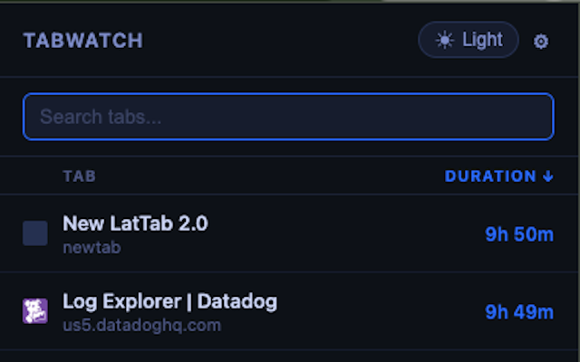

Track Tab Age
Precise timestamps for every open tab, persisted across browser sessions and restarts. Never lose track of when you opened something again.
TabWatch shows exactly how long every browser tab has been open — so you can spot the stale ones, search, sort, and close them without ever leaving the popup.

TabWatch gives you full visibility and control over every open tab — no account, no sync, no nonsense.
Precise timestamps for every open tab, persisted across browser sessions and restarts. Never lose track of when you opened something again.
Filter hundreds of tabs by title or URL in real time. Find the tab you opened three days ago without scrolling through everything.
Sort by duration or title with a single click. Jump directly to any tab — TabWatch focuses the right window automatically.
Color-coded staleness alerts escalate from blue to yellow, orange, and red based on how long a tab has been sitting idle — configurable to your workflow.
See how many times you've activated each tab since it opened. Useful for understanding which tabs you actually use versus which ones you just keep "just in case."
Arrow keys to navigate, Enter to jump, Escape to close, and number keys 1–5 to instantly switch to a specific tab. Zero mouse required.
TabWatch works silently in the background — no setup, no configuration required to get started.
One-click install from the Chrome Web Store or Firefox Add-ons. No account needed. Permissions are minimal and clearly explained.
TabWatch silently records when each tab was opened. It runs as a lightweight service worker — no impact on browser performance.
Click the toolbar icon to see every open tab ranked by age. Search, sort, jump, or close — all without leaving the popup.
TabWatch is built on a simple principle: the extension should help you, not collect from you.
chrome.storage.local, so durations survive browser restarts and system reboots. When the browser restarts, TabWatch resumes tracking from where it left off.
Free, private, and takes ten seconds to install.